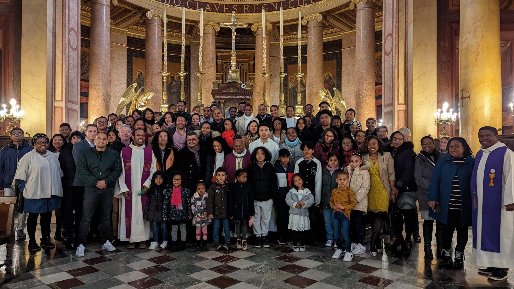

Bienvenue sur notre site !
C'est avec une grande joie et beaucoup d'amour que nous vous accueillons sur le site officiel de la Communauté Catholique Malgache de Rennes et de ses environs. Au nom du Père, du Fils et du Saint-Esprit, nous vous saluons tous!
Ce site a été conçu comme un lieu de rencontre, de partage et de renforcement de notre communion avec le Seigneur et entre nous. Vous y trouverez les dernières nouvelles concernant nos activités, les dates de nos célébrations, ainsi que des enseignements et conseils spirituels de la part de nos évêques et prêtres.
Vous y trouverez les dernières nouvelles concernant nos activités, les dates de nos célébrations, ainsi que des enseignements et conseils spirituels.
Merci de votre visite, et nous espérons que la consultation de ce site sera une bénédiction et un encouragement pour votre foi. N'hésitez pas à nous envoyer vos suggestions et demandes.
Que la grâce du Seigneur soit avec nous tous ! Avec nos meilleurs vœux de paix et de réussite !
